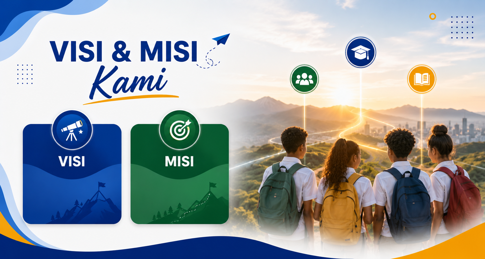

"Terwujudnya masyarakat Distrik Pulau Tiga yang cerdas, berkarakter, mandiri, dan berdaya saing melalui pendidikan kesetaraan yang inklusif, berkualitas, serta berbasis kearifan lokal Asmat."
4 Pilar utama dalam mewujudkan visi pendidikan yang berkualitas dan berkeadilan
Menyelenggarakan program pendidikan kesetaraan Paket A, B, dan C yang terjangkau, berkualitas, dan berbasis kompetensi dengan standar nasional pendidikan.
Memberdayakan masyarakat melalui program literasi, keterampilan vokasional, dan kewirausahaan berbasis potensi lokal Asmat (ukir, anyaman, pariwisata budaya).
Meningkatkan kualifikasi dan kompetensi tutor serta pengelola PKBM melalui pelatihan berkelanjutan dan pendampingan profesional.
Membangun kemitraan strategis dengan pemerintah daerah, dunia usaha, LSM, dan masyarakat untuk mendukung pendidikan berkelanjutan di Asmat.
8 Target konkret yang akan kami capai dalam 5 tahun ke depan
Menjangkau minimal 500 warga Distrik Pulau Tiga yang belum menyelesaikan pendidikan dasar dan menengah melalui program Paket A, B, dan C.
Mencapai tingkat kelulusan minimal 90% untuk seluruh program dengan nilai rata-rata di atas standar kelulusan nasional.
Mendorong minimal 30% lulusan Paket C untuk melanjutkan ke perguruan tinggi atau memasuki dunia kerja melalui program bimbingan beasiswa.
Menurunkan angka buta aksara di Distrik Pulau Tiga sebesar 50% melalui program literasi dan kejar paket.
Melatih minimal 100 warga dalam keterampilan vokasional (ukir Asmat, kerajinan anyaman, budidaya perikanan) untuk meningkatkan ekonomi keluarga.
Seluruh tutor memiliki kualifikasi minimal D3/S1 dan mengikuti pelatihan sertifikasi tutor PKBM setiap tahun.
Memiliki ruang belajar permanen, perpustakaan mini, dan akses internet di Kampung Nakai pada tahun 2028.
Menyediakan laporan keuangan dan data peserta secara terbuka setiap bulan melalui website untuk publik dan Dinas Pendidikan.
Kami menjunjung tinggi nilai-nilai luhur budaya Asmat dalam setiap proses pembelajaran
Semangat Kebersamaan
(Mbatik) Belajar bersama-sama
Menghormati Tetua
(Yow) Hormat pada guru & orang tua
Kerukunan
Hidup damai antar sesama
Cinta Alam
Menjaga hutan & sungai
Mari bergabung dalam gerakan mencerdaskan kehidupan bangsa dari Distrik Pulau Tiga, Asmat. Pendidikan gratis untuk semua!